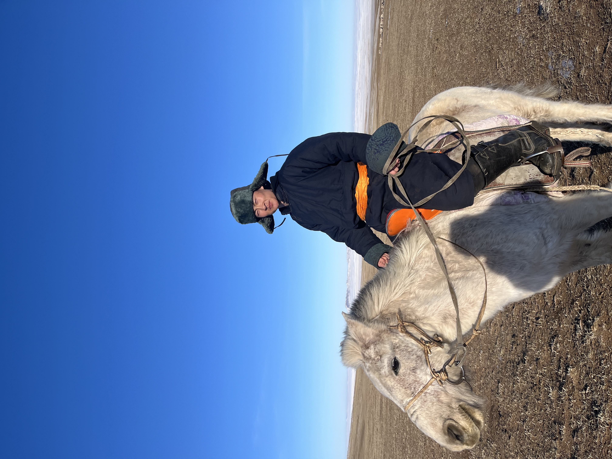
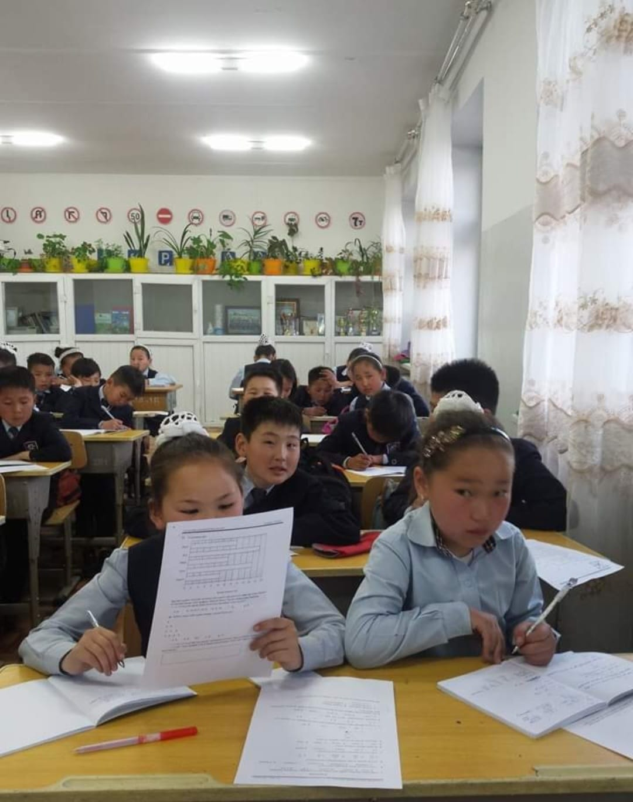
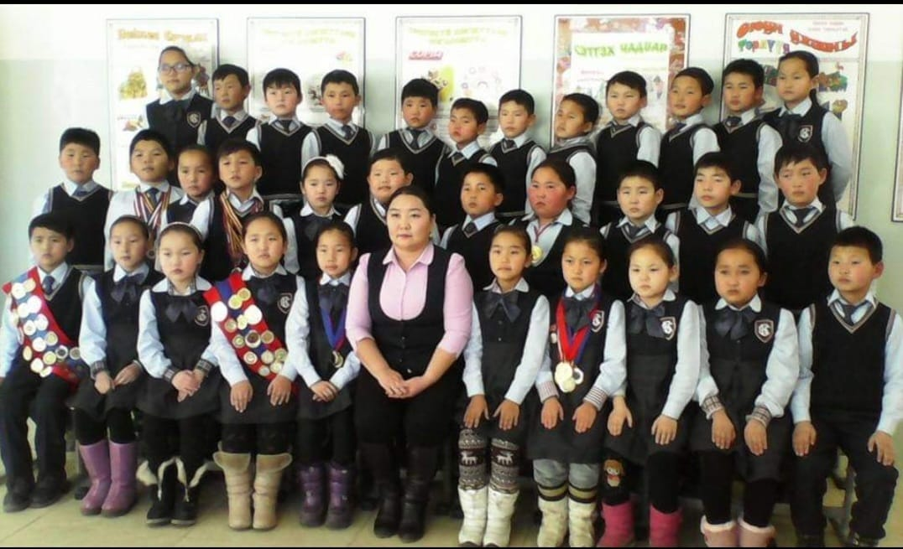
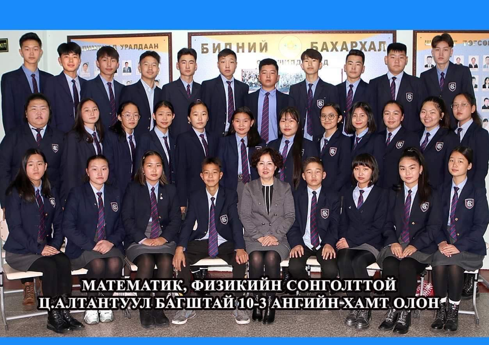
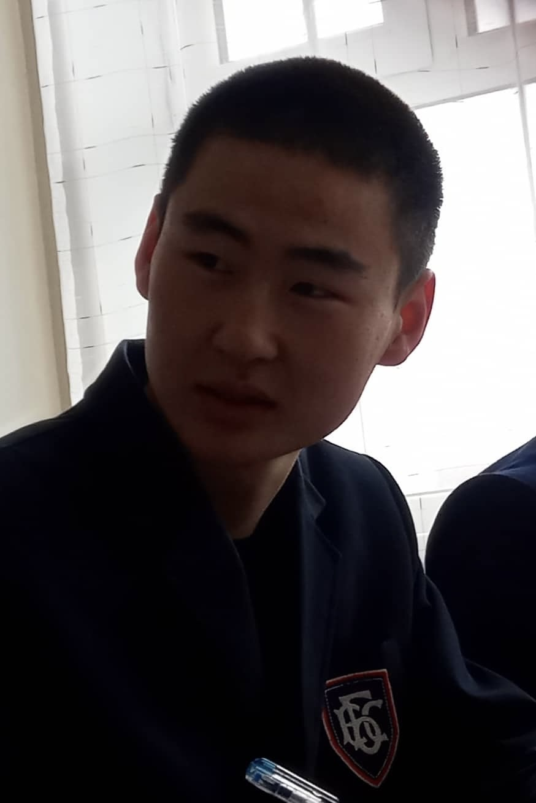
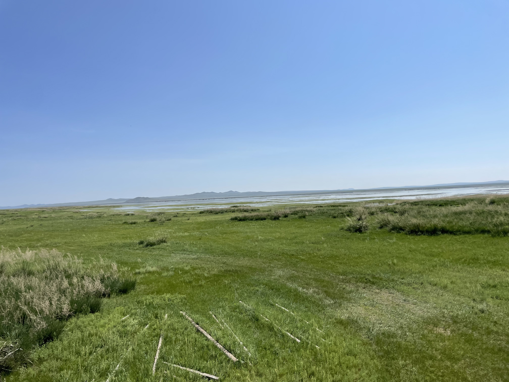
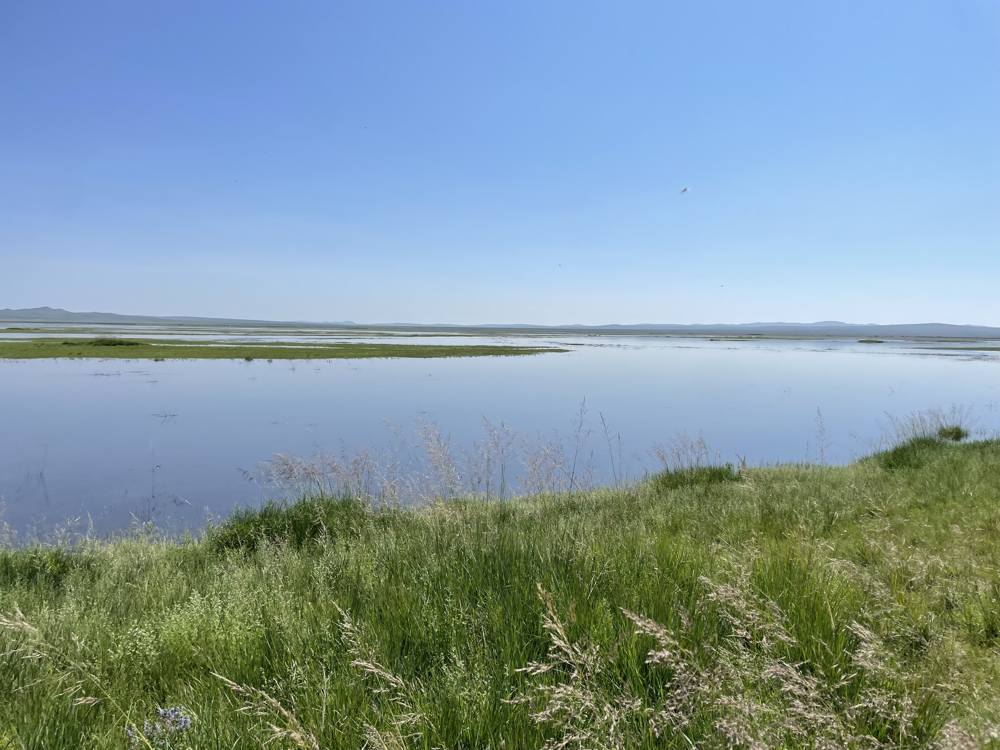

Childhood in the countryside
I was born on June 13, 2005. I grew up surrounded by open land, animals, and the pace of rural life, especially during school holidays.
Personal journey
My story begins in Khentii, moves through Baganuur, and continues today at GMIT University.
I was born on June 13, 2005. I grew up surrounded by open land, animals, and the pace of rural life, especially during school holidays.
My educational journey began at Kherlen 4th Kindergarten, and in 2011 I continued at Kherlen 4th School in Khentii Province.
I moved to Baganuur, a district of Ulaanbaatar, where I studied at Bolovsrol Complex School and completed high school.
I began my undergraduate studies at GMIT University, focusing on engineering, automation, robotics, and innovation-driven entrepreneurship.
Roots
These photos represent more than memories. They reflect school life in Khentii and Baganuur, time in the countryside, and the background that continues to shape my perspective.
I carry that sense of place into how I learn, how I work, and how I imagine the future.

Photo journal








What stays with me
01
I like understanding why things work, not only how to use them.
02
Progress matters most when it is built through steady effort over time.
03
I want to aim high while staying grounded in useful, real-world outcomes.